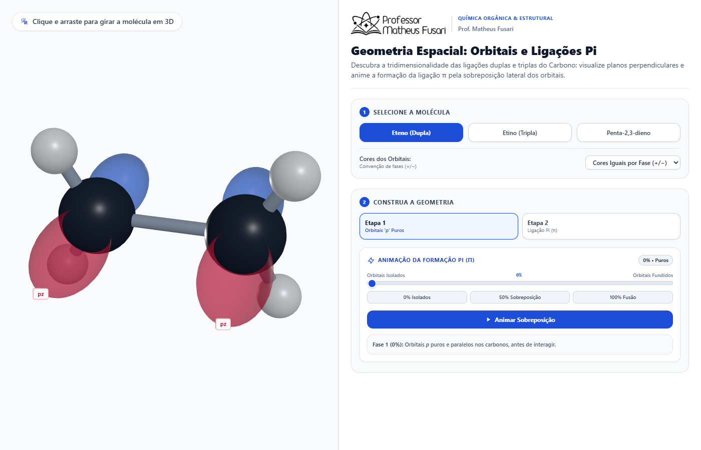
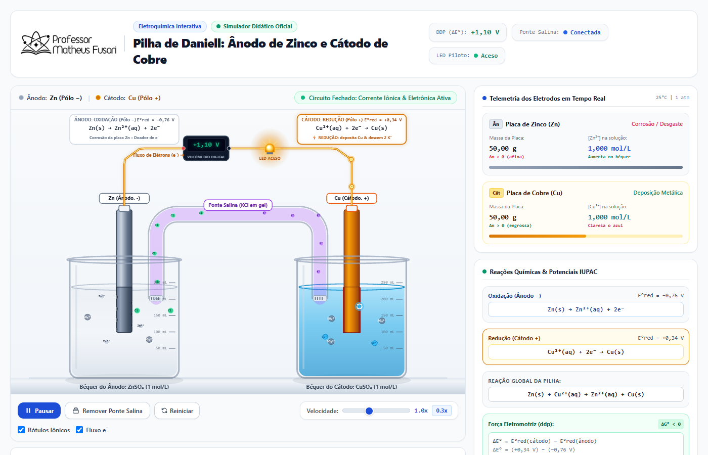
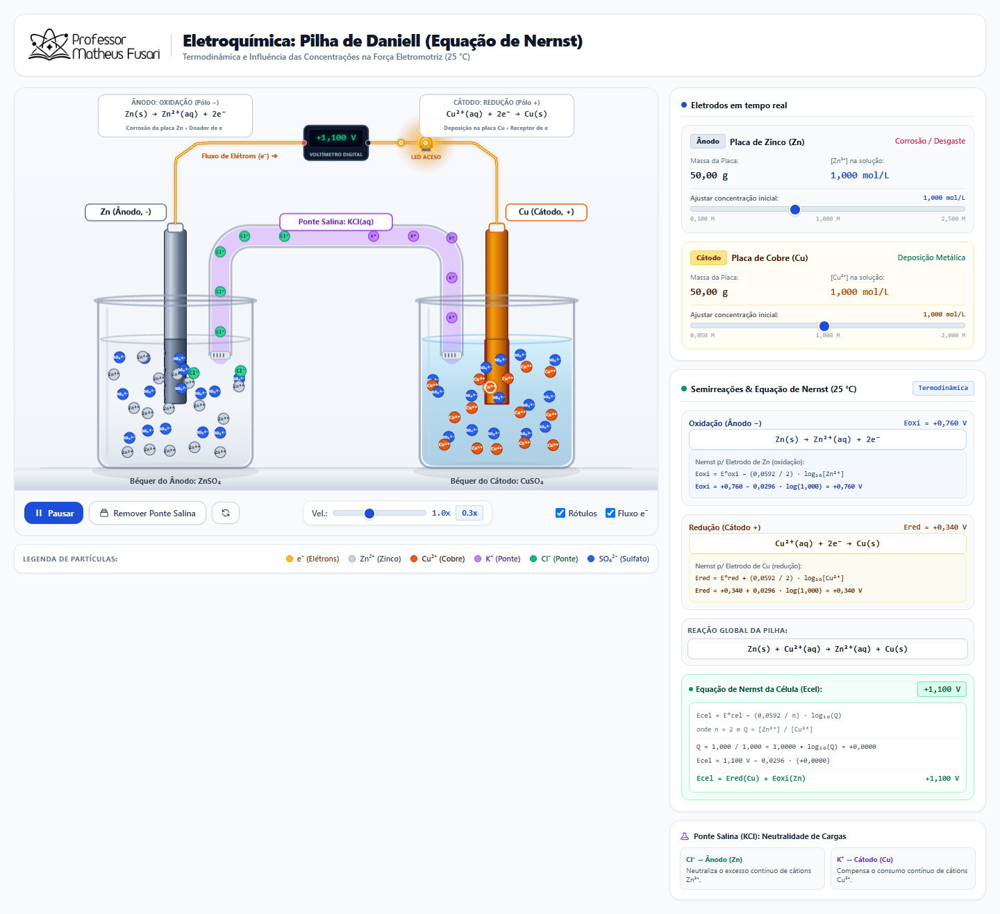

Laboratório Virtual de Química
Explore modelos atômicos, sobreposição de orbitais e eletroquímica em um ambiente tridimensional, dinâmico e rigorosamente embasado.

Orbitais Moleculares e Ligações π
Visualize em 3D a sobreposição lateral de orbitais p e o emparelhamento de elétrons na formação de ligações duplas e triplas.
Acessar Simulador
Pilha de Daniell (Padrão)
Acompanhe o funcionamento microscópico da célula galvânica Zn/Cu. Observe o fluxo de elétrons, a migração iônica e a variação de massa.
Acessar Simulador
Pilha de Daniell (Avançada)
Aplique a Equação de Nernst em tempo real. Altere as concentrações molares e veja o impacto instantâneo no potencial (DDP).
Acessar Simulador